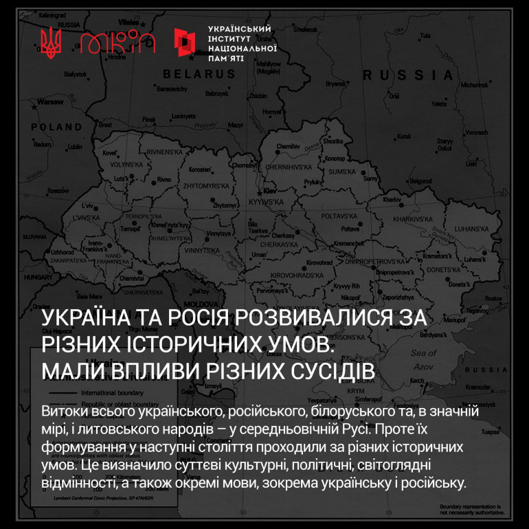
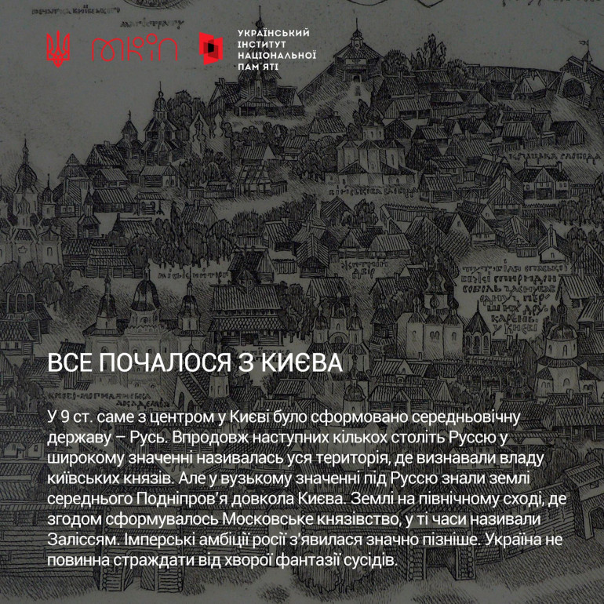
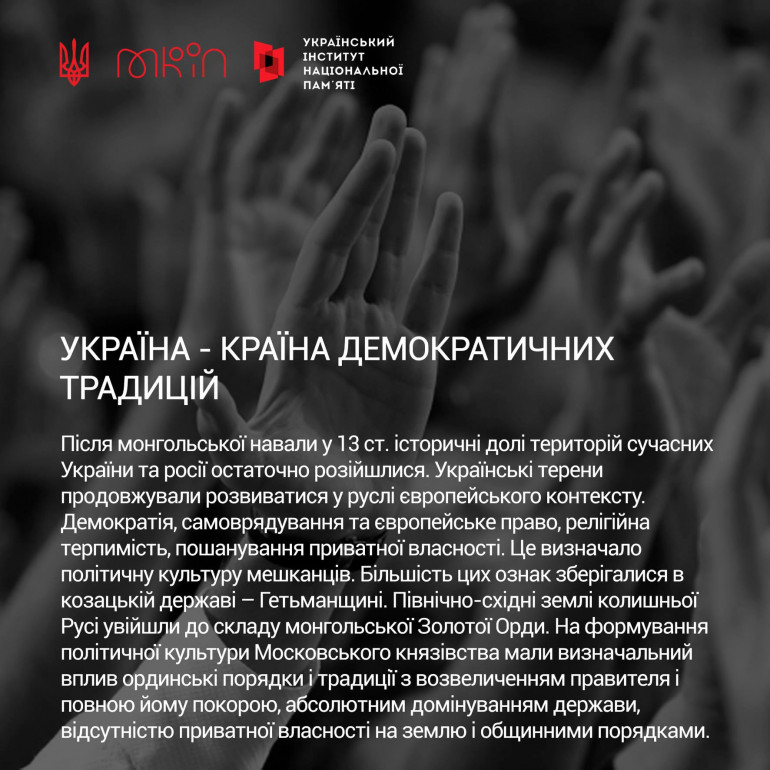
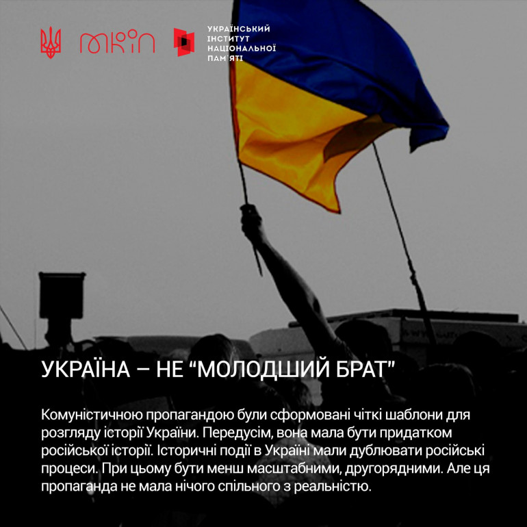
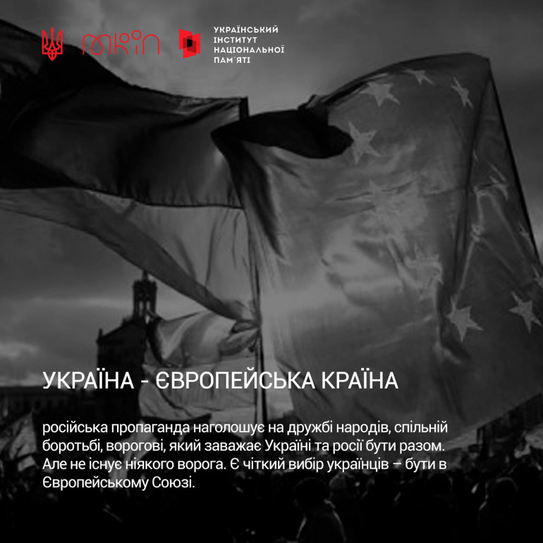
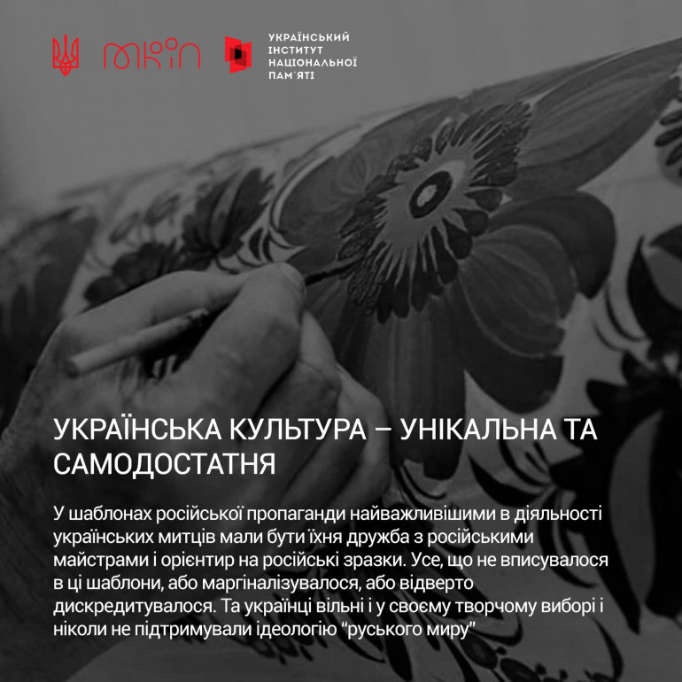
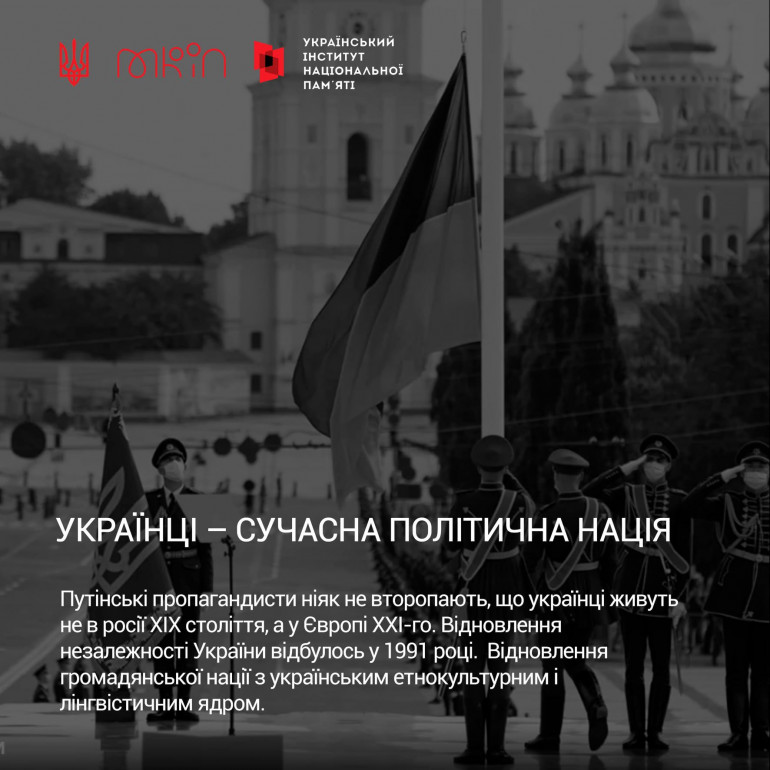
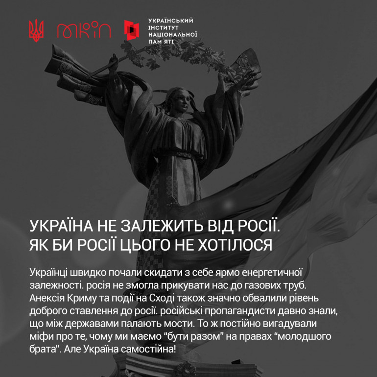

Чому українці та рашенці історично – не «братні народи»
Наша війна з сусідами-рашистами почалася задовго до 2022 року, й навіть до 2014 року
Ще з уроків історії ми знаємо, що вони ніколи не давали нам жити спокійно - це й українсько-расейський договір 1654 року, й знищення москальською ордою Гетьманщини, козацького стану, Січі, тотальна русифікація, знищення української державості. В 1918 розпочалася нова хвиля намагань москальщини знищити все українське. Це й заборона всього українського, й Голодомор, й найбільші втрати України в другій світовій війні...
За 350 років расея воювала з Україною 24 рази!
Україна та расєя розвивалися за різних історичних умов, мали впливи різних сусідів
Витоки всього українського, рашенського, білоруського та, значною мірою, і литовського народів – у середньовічній Русі. Проте їх формування у наступні століття проходили за різних історичних умов. Це визначило суттєві культурні, політичні, світоглядні відмінності, а також окремі мови, зокрема українську і рашенську.
Ми, на відміну від них, належимо до глибоко європейської демократичної і громадянської традиції. В Україні неможливий путлер, а в мацквє неможливий Майдан. Українська історія пишеться не згори, а знизу, не державою, а суспільством. А рашенська історія написана навпаки як історія рашенської держави. Це [наша] історія громадянства проти [їхньої] історії підданства.
Повторюючи тезу Драгоманова, Липинського і Лисяка-Рудницького, головна різниця України і раши полягає не так в мові, хоча мови різні, не так в релігії, хоча релігії теж різні, як у політичних традиціях, стосунках між державою і суспільством.
У дискусіях нам потрібно наполягати, що минуле – це інша країна, там все робиться по-іншому. Наполягати, що руський не є рашенський. Нам потрібно використовувати паралелі. Навряд чи можна назвати ацтеків і мая сучасною Мексикою. Такі маніпуляції з історією неминуче ведуть до політичної агресії. Понад те – такі маніпуляції є частиною політичного плану.
Історична пам’ять – це потужний інгредієнт. У певних пропорціях він може бути ліками, а в інших – отрутою. Це те, що ми зараз бачимо в раші, яка отруєна історією і збирається отруєною історією труїти своїх сусідів. Проти цього ми маємо рішуче протистояти.
Усе почалося з Києва
У 9 столітті саме з центром у Києві сформувалася середньовічна держава – Русь. Упродовж наступних кількох століть Руссю у широкому значенні називалася вся територія, де визнавали владу київських князів. Але у вузькому значенні під Руссю знали землі середнього Подніпров'я довкола Києва. Землі на північному сході, де згодом сформувалось мацковське князівство, в ті часи називали Заліссям. Імперські амбіції параші з'явилися значно пізніше. Україна не повинна страждати через хвору фантазію сусідів.
Україна – країна демократичних традицій
Після монгольської навали у 13 столітті історичні долі територій сучасних України та раші остаточно розійшлися. Українські терени продовжували розвиватися у європейському контексті. Демократія, самоврядування та європейське право, релігійна терпимість, пошанування приватної власності. Це визначило політичну культуру мешканців. Більшість цих ознак зберігалися в козацькій державі – Гетьманщині. Північно-східні землі колишньої Русі увійшли до складу монгольської Золотої Орди. На формування політичної культури мацковського князівства мали визначальний вплив ординські порядки і традиції з возвеличенням правителя і повною йому покорою, абсолютним домінуванням держави, відсутністю приватної власності на землю й общинними порядками.
Україна – не «молодший брат»
Комуністичною пропагандою були сформовані чіткі шаблони для розгляду історії України. Передусім, вона мала бути придатком рашенської історії. Історичні події в Україні мали дублювати рашенські процеси. При цьому бути менш масштабними, другорядними. Але ця пропаганда не мала нічого спільного з реальністю.
Україна – європейська країна
рашенська пропаганда наголошує на дружбі народів, спільній боротьбі, ворогові, який заважає Україні та параші бути разом. Але не існує ніякого ворога. Є чіткий вибір українців – бути у Європейському Союзі.
Міфи про «братні народи» чи «єдиний народ» – абсолютно штучні
-
Концепція «братніх народів – це хворий витвір совдеповської пропаганди на заміну рашенської імперської концепції «триєдиного народу». Це спроба насильно прив'язати українську історію до рашенської та заперечити право українців і білорусів на власний історичний вибір. Після Євромайдану це абсолютно втратило сенс. Нині, щоб обґрунтувати і виправдати агресію проти Українського народу, кремлядська пропаганда почала говорити про «єдиний народ». Вони вплітають сюди й захист православ'я. Адже раша визнає лише мацковський патріархат. Ти ми – не єдиний народ, і ніколи ним не були.
-
Парадоксально, що найбільше до нього спричинилися київські інтелектуали 17 століття. Коли Козацька держава увійшла до складу мацковського царства, майбутня імперія була великою, але відсталою і дуже потребувала освіченої еліти. У той час наші православні київські предки вирішили зміцнити цю імперію, тому що вважали її значною мірою своєю через те, що це була православна держава. І вони створили міф про існування так званого слов’янського народу. Вперше про існування «великого слов'янського народу» стверджувалося у «Синопсисі Київському», і цей підручник перевидавався доволі довго, аж до початку 19 століття.
-
Але в цій концепції київських інтелектуалів ще не було ідеї братства. А міфологія братства виникає аж на початку 19 століття у зв’язку з романтизмом.
-
Але навіть тоді ще не було ідеї старшого і молодшого братів. Ця ідея з’явилась аж… у пізньому сталінізмі після Другої світової війни, а найбільше закріпилася після «відзначення» 300-ліття Переяславської унії у 1954 році. Власне, лише тоді виникає ця міфологема про рашенський народ як старшого брата й український як молодшого брата.
Українська культура – унікальна та самодостатня
У шаблонах рашенської пропаганди найважливішими в діяльності українських митців мали бути їхня дружба з рашенськими майстрами й орієнтир на рашенські зразки. Усе, що не вписувалося в ці шаблони, – або маргіналізувалося, або відверто дискредитувалося. Та українці вільні й у своєму творчому виборі та ніколи не підтримували ідеологію «русскава міра».
Українці – сучасна політична нація
путлеровські пропагандони ніяк не второпають, що українці живуть не в раші 19 століття, а в Європі 21-го. Відновлення незалежності України відбулось у 1991 році. Відновлення громадянської нації з українським етнокультурним і лінгвістичним ядром.
Україна не залежить від раші, як би раші цього не хотілося
Українці швидко почали скидати з себе ярмо енергетичної залежності. раша не змогла прикувати нас до газових труб. Анексія Криму та події на сході України також значно обвалили рівень доброго ставлення до рашки. рашенські пропагандисти давно знали, що між державами палають мости. Тож постійно вигадували міфи про те, чому ми маємо «бути разом» на правах «молодшого брата». Але Україна самостійна!
Але Україна все одно переможе!
Й над всіма нашими землями, навіть зараз тимчасово окупованими, обов'язково замайорить наш прапор!

Саме українці стали запорукою тієї підтримки, яку зараз отримує наша держава від міжнародних партнерів. Наша феноменальна здатність гуртуватися в найтяжчі часи разом з бажанням допомогти тим, хто того потребує, відстоювання своїх позицій та небажання підкорюватись сучасні українці, мабуть, отримали у спадок від наших славних пращурів.
Однак, ми знаємо і усвідомлюємо ціну Перемоги. Ми вдячні тим, хто нас боронить, і тим, хто віддав своє життя. Усім серцем віримо у Перемогу й деокупацію усіх тимчасово окупованих територій”.
Джерело інформації